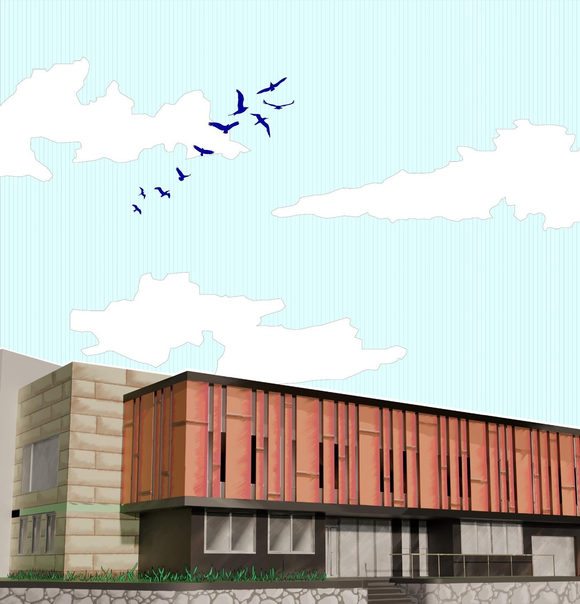

This project, located in a densely consolidated area of the city of Manizales, was originally conceived as a single-family residence, including accommodation for domestic staff. However, over time, the dwelling became unsuited to the needs of society and was consequently abandoned. This created the opportunity to repurpose the property through a new use: the implementation of an educational facility within the existing building, responding more effectively to the local needs of the sector and its population, where the established urban fabric does not allow for the construction of new facilities that comply with the city's planning regulations.
Accordingly, the building preserves its main volume, where the living room and bedrooms were originally located. These spaces now accommodate the entrance hall, the administrative area, and classrooms on the upper floor. In addition, two new volumes were introduced over the existing courtyard and in place of the former service residence.
In compliance with Colombian technical quality standards for kitchens in educational establishments, the industrial kitchen was designed with lateral units and a central island, plus a dedicated area for reception, washing, trash and food storage. Given the reduced space, the restrooms were optimized to fit two units, employing a privacy trap, controlled sky-lighting and ventilation ducts.
